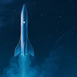
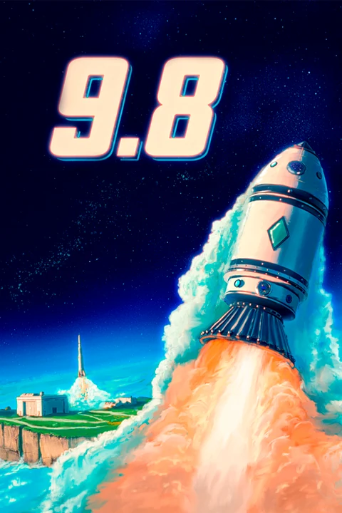
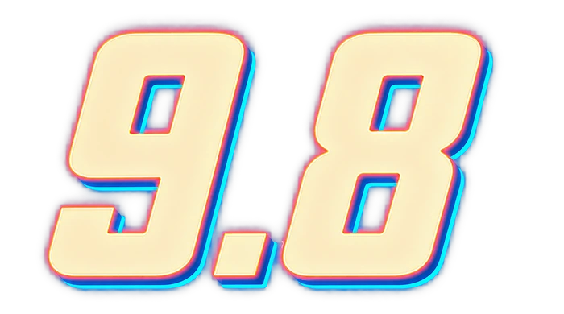
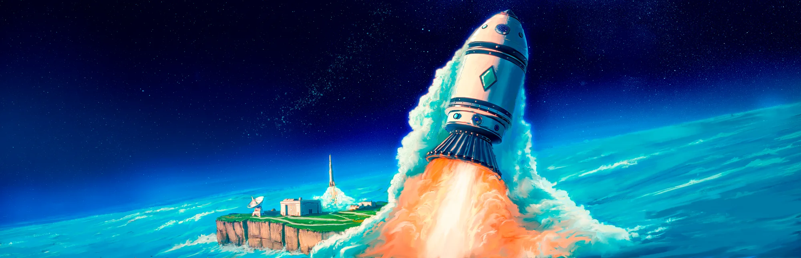
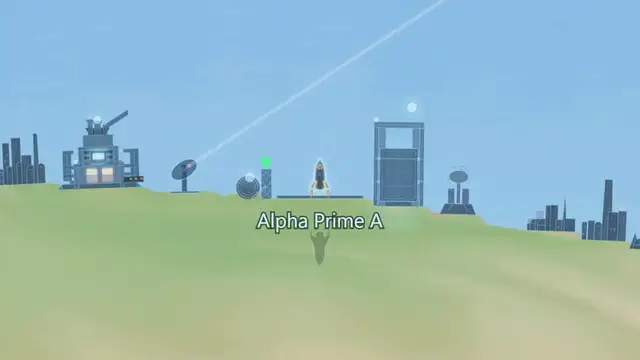
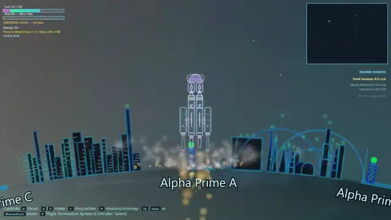
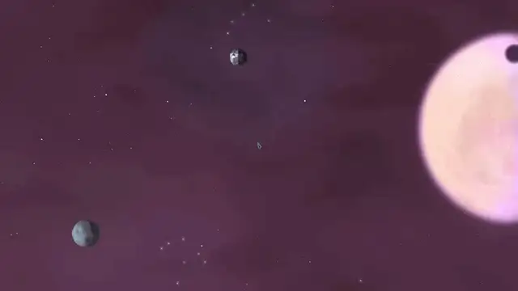
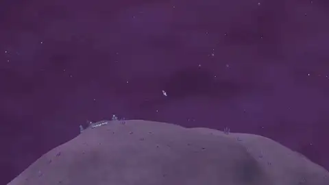
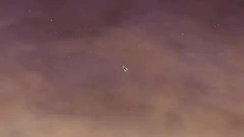

9.8Press KitKit de ImprensaKit de prensaDossier de pressePressekit媒体资料包Пресс-кит
Key art / capsule Imagem principal / cápsula Arte principal / cápsula Image clé / capsule Schlüsselgrafik / Kapsel 主视觉图 / 竖版海报 Ключевая иллюстрация / капсула
Vertical capsule art (600×900) by Alberto Trujillo. Full-resolution originals of all key art, logo and capsules are in the ZIP and the Drive folder above. Imagem de cápsula vertical (600×900) por Alberto Trujillo. Os originais em alta resolução de toda a arte principal, logótipo e cápsulas estão no ZIP e na pasta do Drive acima. Arte de cápsula vertical (600×900) de Alberto Trujillo. Los originales a resolución completa de todo el arte principal, el logotipo y las cápsulas están en el ZIP y en la carpeta de Drive de arriba. Image de capsule verticale (600×900) par Alberto Trujillo. Les originaux en pleine résolution de toute l’image clé, du logo et des capsules se trouvent dans le ZIP et le dossier Drive ci-dessus. Vertikale Kapselgrafik (600×900) von Alberto Trujillo. Die Originale aller Schlüsselgrafiken, des Logos und der Kapseln in voller Auflösung finden sich im ZIP und im Drive-Ordner oben. 竖版海报（600×900），作者 Alberto Trujillo。所有主视觉图、标志与海报的全分辨率原图见上方 ZIP 与 Drive 文件夹。 Вертикальная капсула (600×900), автор Alberto Trujillo. Оригиналы в полном разрешении всей ключевой иллюстрации, логотипа и капсул — в ZIP и в папке Drive выше.


Physics-driven 2D space agency game
Build rockets, fly them yourself, and grow a barebones space agency into an interstellar program.
Factsheet
What 9.8 is
9.8 is a physics-driven 2D space agency game about designing vehicles, flying missions and building the science, technology and logistics needed to go farther.
The player begins with a limited home-world program. Across five technological eras, that same agency grows into a network of laboratories, launch sites, production, colonies and interstellar missions.
Closest touchstones: Kerbal Space Program, Spaceflight Simulator and Lunar Lander.
Planned for 1.0
Current build v0.6.20 is about 60% of this scope. These numbers describe the plan for 1.0, not what ships in the public demo.
What players are saying
“It was good fun, the little details like the sonic booms in the atmosphere, the planetary variety and mission descriptions added to the charm of a greatly expanded Lunar Lander style game.”
“The game is already better than Spaceflight Simulator.”
“The gravity is very well polished. I can actually do a gravity assist!”
“Always wanted something like that in a space game.”
Features
The agency loop
Progression comes from what the player designs, flies, studies and builds.
Plan the mission and assemble vehicles from the parts, materials and propellants available.
Launch, rendezvous, land and operate in space, atmosphere, on the surface or at sea.
Complete missions, experiments and observations to gather science.
Unlock technologies, then apply them to create new parts, engines and capabilities.
Create launch sites, industry, stations and off-world colonies where they matter.
Supply new infrastructure, automate routes and push the agency farther from home.
There is no abstract experience bar. The agency advances when the vehicles, science, logistics and infrastructure for the next step actually exist.
Flight and simulation
Every body attracts every other body, and every vehicle flies through their combined gravity. Orbits are not prewritten: captures, slingshots, resonances, perturbations and collisions all emerge from the same simulation.

In-game capture — launch to orbit
Vehicle design
Every part in the VAB pulls its weight: mass, cost, dimensions, aerodynamics, thrust, fuel, staging and payload limits all feed the same simulation the finished craft flies in.

Vehicle assembly building — parts and staging
Science and R&D
Flying missions earns science, but so do standalone experiments, observations and dedicated research facilities. The results are spent node by node in the research tree.
Research unlocks capability.
New parts, vehicle classes, guidance, production, logistics and later interstellar technology.
Five eras, one continuous program.
The tree runs from the first space-age hardware to the technology needed to cross between stars.
Planned 1.0 vehicle range
9.8 grows beyond launch vehicles. Surface rovers, orbital stations and more advanced spacecraft remain part of one connected agency and share the same science, resources, missions and logistics.
The useful machine depends on local gravity, atmosphere, terrain, distance, heat and the resources available there.
By the late game, progress is less about launching bigger rockets and more about picking the right machine for each leg of the mission.
Resources, logistics and colonies
What the agency extracts becomes propellant, structural material and building inputs. Different worlds offer different resources, so each outpost grows its own supply chain and lets the program operate far from home.
The early flights are manual. Once pads, storage, industry and off-world infrastructure exist, recurring logistics can be automated and the colony network can keep expanding.
Online co-op · planned v0.7
Players work in the same program, contributing to missions, research, construction, colonies and the supply network.

The Mouraxis planetary system

Landing on Prickle

Things go wrong on Ares
Worlds
The current build takes place in Solara, the first of five star systems planned for 1.0. The full 1.0 scope adds up to 150+ bodies in total — moons, gas giants, ice worlds and more. Here are a few already in the game.
The central star of the system.
Home world. Earth-like with clouds, seas, and atmosphere.
Volcanic world with a molten lava surface.
Ringed gas giant with a crushing atmosphere.
Ice world at the frontier, with geysers and frozen terrain.
Your nearest neighbor and first stepping stone into space.
A scorched world baked by its gas giant’s radiation.
Non-spherical moon with surface-normal gravity.
...and more being built toward the planned 150+ across five systems.
Screenshots
Play it
The public Steam demo arrives September 2026. Until then, you can wishlist on Steam or try the closed alpha playtest directly.
Steam
Wishlist now to get notified the moment the free demo goes live in September 2026.
View on SteamItch.io
Play the current closed playtest build in your browser. Password: neonrockets
About
Tremoço Games is a solo dev studio by Porto-based musician and composer André B. Silva, working on his first game, 9.8. The project combines a lifelong passion for space exploration and physics with a background in music composition.
Publishing status. Not actively seeking a publishing deal, but open to conversations where there is a clear fit.
Credits
Press assets, raw screenshots and private build access are available on request.
Contact
Jogo 2D de agência espacial baseado em física
Constrói foguetões, pilota-os tu mesmo e transforma uma agência espacial modesta num programa interestelar.
Ficha técnica
O que é o 9.8
9.8 é um jogo 2D de agência espacial baseado em física, sobre desenhar veículos, voar em missões e construir a ciência, a tecnologia e a logística necessárias para chegar mais longe.
O jogador começa com um programa modesto no mundo natal. Ao longo de cinco eras tecnológicas, essa mesma agência cresce até se tornar numa rede de laboratórios, locais de lançamento, produção, colónias e missões interestelares.
Principais referências: Kerbal Space Program, Spaceflight Simulator e Lunar Lander.
Previsto para a 1.0
A versão atual v0.6.20 corresponde a cerca de 60% deste âmbito. Estes números descrevem o plano para a 1.0, não o que estará disponível na demo pública.
O que dizem os jogadores
“It was good fun, the little details like the sonic booms in the atmosphere, the planetary variety and mission descriptions added to the charm of a greatly expanded Lunar Lander style game.”
“The game is already better than Spaceflight Simulator.”
“The gravity is very well polished. I can actually do a gravity assist!”
“Always wanted something like that in a space game.”
Características
O ciclo da agência
A progressão nasce do que o jogador desenha, pilota, estuda e constrói.
Planeia a missão e monta veículos a partir das peças, materiais e propolentes disponíveis.
Lança, faz encontros orbitais, aterra e opera no espaço, na atmosfera, na superfície ou no mar.
Completa missões, experiências e observações para reunir ciência.
Desbloqueia tecnologias e aplica-as para criar novas peças, motores e capacidades.
Cria locais de lançamento, indústria, estações e colónias fora do mundo natal onde fizerem sentido.
Abastece a nova infraestrutura, automatiza rotas e leva a agência mais longe de casa.
Não existe uma barra de experiência abstrata. A agência avança quando os veículos, a ciência, a logística e a infraestrutura para o passo seguinte realmente existem.
Voo e simulação
Cada corpo atrai todos os outros, e cada veículo voa através da soma dessas gravidades. As órbitas não estão pré-escritas: capturas, efeitos de fisga, ressonâncias, perturbações e colisões emergem todas da mesma simulação.
Captura do jogo — lançamento até à órbita
Desenho de veículos
Cada peça no VAB tem influência real: massa, custo, dimensões, aerodinâmica, propulsão, combustível, separação de estágios e limites de carga alimentam todos a mesma simulação em que a nave acabada vai voar.
Vehicle Assembly Building — peças e estágios
Ciência e I&D
Voar em missões gera ciência, mas também o fazem experiências independentes, observações e instalações de investigação dedicadas. Os resultados são gastos, nó a nó, na árvore de investigação.
A investigação desbloqueia capacidade.
Novas peças, classes de veículos, orientação, produção, logística e, mais tarde, tecnologia interestelar.
Cinco eras, um único programa contínuo.
A árvore percorre desde o primeiro equipamento da era espacial até à tecnologia necessária para viajar entre estrelas.
Gama de veículos prevista para a 1.0
O 9.8 cresce para lá dos veículos de lançamento. Rovers de superfície, estações orbitais e naves mais avançadas continuam a fazer parte de uma única agência ligada, partilhando a mesma ciência, recursos, missões e logística.
A máquina certa depende da gravidade local, da atmosfera, do terreno, da distância, do calor e dos recursos disponíveis nesse lugar.
Na fase mais avançada do jogo, o progresso deixa de ser lançar foguetões maiores e passa a ser escolher a máquina certa para cada etapa da missão.
Recursos, logística e colónias
O que a agência extrai transforma-se em propolente, material estrutural e componentes de construção. Mundos diferentes oferecem recursos diferentes, por isso cada posto avançado desenvolve a sua própria cadeia de abastecimento e permite ao programa operar longe de casa.
Os primeiros voos são manuais. Depois de existirem plataformas, armazenamento, indústria e infraestrutura fora do mundo natal, a logística recorrente pode ser automatizada e a rede de colónias continua a crescer.
Cooperativo online · previsto para a v0.7
Os jogadores trabalham no mesmo programa, contribuindo para missões, investigação, construção, colónias e a rede de abastecimento.
O sistema planetário de Mouraxis
A aterrar em Prickle
Quando corre mal em Ares
Mundos
A versão atual decorre em Solara, o primeiro de cinco sistemas estelares previstos para a 1.0. O âmbito completo da 1.0 acrescenta até 150+ corpos no total — luas, gigantes gasosos, mundos gelados e mais. Aqui ficam alguns já presentes no jogo.
A estrela central do sistema.
Mundo natal. De tipo terrestre, com nuvens, mares e atmosfera.
Mundo vulcânico com uma superfície de lava incandescente.
Gigante gasoso com anéis e uma atmosfera esmagadora.
Mundo gelado na fronteira do sistema, com géiseres e terreno congelado.
O teu vizinho mais próximo e o primeiro passo rumo ao espaço.
Um mundo marcado pela radiação do seu gigante gasoso.
Lua não esférica, com gravidade orientada pela forma da superfície.
...e mais em construção, rumo aos 150+ previstos em cinco sistemas.
Capturas de ecrã
Jogar
A demo pública na Steam chega em setembro de 2026. Até lá, podes adicionar à lista de desejos na Steam ou experimentar já o playtest fechado.
Steam
Adiciona já à lista de desejos para seres avisado assim que a demo gratuita ficar disponível, em setembro de 2026.
Ver na SteamItch.io
Joga a versão atual do playtest fechado no browser. Palavra-passe: neonrockets
Sobre
A Tremoço Games é um estúdio independente de uma só pessoa, do músico e compositor portuense André B. Silva, que trabalha no seu primeiro jogo, 9.8. O projeto combina uma paixão de longa data pela exploração espacial e pela física com uma trajetória em composição musical.
Estado editorial. Não está ativamente à procura de um acordo de distribuição, mas está aberto a conversas onde exista um encaixe claro.
Créditos
Materiais de imprensa, capturas de ecrã em bruto e acesso a versões privadas estão disponíveis mediante pedido.
Contacto
Juego 2D de agencia espacial basado en la física
Construye cohetes, pilótalos tú mismo y convierte una agencia espacial modesta en un programa interestelar.
Ficha técnica
Qué es 9.8
9.8 es un juego 2D de agencia espacial basado en la física, sobre diseñar vehículos, volar misiones y construir la ciencia, la tecnología y la logística necesarias para llegar más lejos.
El jugador empieza con un programa modesto en el mundo de origen. A lo largo de cinco eras tecnológicas, esa misma agencia crece hasta convertirse en una red de laboratorios, sitios de lanzamiento, producción, colonias y misiones interestelares.
Referencias más cercanas: Kerbal Space Program, Spaceflight Simulator y Lunar Lander.
Previsto para la 1.0
La versión actual v0.6.20 supone cerca del 60% de este alcance. Estas cifras describen el plan para la 1.0, no lo que estará disponible en la demo pública.
Lo que dicen los jugadores
“It was good fun, the little details like the sonic booms in the atmosphere, the planetary variety and mission descriptions added to the charm of a greatly expanded Lunar Lander style game.”
“The game is already better than Spaceflight Simulator.”
“The gravity is very well polished. I can actually do a gravity assist!”
“Always wanted something like that in a space game.”
Características
El ciclo de la agencia
La progresión nace de lo que el jugador diseña, vuela, estudia y construye.
Planifica la misión y ensambla vehículos con las piezas, materiales y propelentes disponibles.
Lanza, realiza encuentros orbitales, aterriza y opera en el espacio, la atmósfera, la superficie o el mar.
Completa misiones, experimentos y observaciones para reunir ciencia.
Desbloquea tecnologías y aplícalas para crear nuevas piezas, motores y capacidades.
Crea sitios de lanzamiento, industria, estaciones y colonias fuera del mundo de origen donde importen.
Abastece la nueva infraestructura, automatiza rutas y lleva la agencia más lejos de casa.
No hay una barra de experiencia abstracta. La agencia avanza cuando los vehículos, la ciencia, la logística y la infraestructura para el siguiente paso realmente existen.
Vuelo y simulación
Cada cuerpo atrae a todos los demás, y cada vehículo vuela a través de la suma de esas gravedades. Las órbitas no están prescritas: capturas, efectos de honda, resonancias, perturbaciones y colisiones emergen todas de la misma simulación.
Captura del juego — lanzamiento a órbita
Diseño de vehículos
Cada pieza del VAB cuenta de verdad: masa, coste, dimensiones, aerodinámica, empuje, combustible, separación de etapas y límites de carga alimentan todos la misma simulación en la que volará la nave terminada.
Vehicle Assembly Building — piezas y etapas
Ciencia e I+D
Volar misiones genera ciencia, pero también lo hacen los experimentos independientes, las observaciones y las instalaciones de investigación dedicadas. Los resultados se gastan, nodo a nodo, en el árbol de investigación.
La investigación desbloquea capacidad.
Nuevas piezas, clases de vehículos, guía, producción, logística y, más adelante, tecnología interestelar.
Cinco eras, un único programa continuo.
El árbol recorre desde el primer equipo de la era espacial hasta la tecnología necesaria para viajar entre estrellas.
Gama de vehículos prevista para la 1.0
9.8 crece más allá de los vehículos de lanzamiento. Rovers de superficie, estaciones orbitales y naves más avanzadas siguen formando parte de una única agencia conectada, y comparten la misma ciencia, recursos, misiones y logística.
La máquina adecuada depende de la gravedad local, la atmósfera, el terreno, la distancia, el calor y los recursos disponibles en ese lugar.
En la fase avanzada del juego, el progreso deja de tratarse de lanzar cohetes más grandes y pasa a tratarse de elegir la máquina correcta para cada tramo de la misión.
Recursos, logística y colonias
Lo que la agencia extrae se convierte en propelente, material estructural e insumos de construcción. Mundos diferentes ofrecen recursos diferentes, así que cada puesto avanzado desarrolla su propia cadena de suministro y permite que el programa opere lejos de casa.
Los primeros vuelos son manuales. Una vez que existen plataformas, almacenamiento, industria e infraestructura fuera del mundo de origen, la logística recurrente puede automatizarse y la red de colonias puede seguir creciendo.
Cooperativo online · previsto para la v0.7
Los jugadores trabajan en el mismo programa, contribuyendo a misiones, investigación, construcción, colonias y la red de suministro.
El sistema planetario de Mouraxis
Aterrizando en Prickle
Cuando algo sale mal en Ares
Mundos
La versión actual transcurre en Solara, el primero de cinco sistemas estelares previstos para la 1.0. El alcance completo de la 1.0 añade hasta 150+ cuerpos en total: lunas, gigantes gaseosos, mundos helados y más. Aquí tienes algunos ya presentes en el juego.
La estrella central del sistema.
Mundo de origen. De tipo terrestre, con nubes, mares y atmósfera.
Mundo volcánico con una superficie de lava fundida.
Gigante gaseoso con anillos y una atmósfera aplastante.
Mundo helado en la frontera del sistema, con géiseres y terreno congelado.
Tu vecino más cercano y el primer peldaño hacia el espacio.
Un mundo marcado por la radiación de su gigante gaseoso.
Luna no esférica, con gravedad condicionada por la forma de la superficie.
...y más en construcción, camino de los 150+ previstos en cinco sistemas.
Capturas de pantalla
Jugar
La demo pública en Steam llega en septiembre de 2026. Mientras tanto, puedes añadirlo a tu lista de deseos en Steam o probar directamente el playtest cerrado.
Steam
Añádelo ya a tu lista de deseos para que te avisen en cuanto la demo gratuita esté disponible, en septiembre de 2026.
Ver en SteamItch.io
Juega la versión actual del playtest cerrado en el navegador. Contraseña: neonrockets
Sobre
Tremoço Games es un estudio independiente de una sola persona, del músico y compositor André B. Silva, afincado en Oporto, que trabaja en su primer juego, 9.8. El proyecto combina una pasión de toda la vida por la exploración espacial y la física con una trayectoria en composición musical.
Estado editorial. No está buscando activamente un acuerdo de distribución, pero está abierto a conversaciones donde exista un encaje claro.
Créditos
Materiales de prensa, capturas de pantalla en bruto y acceso a compilaciones privadas disponibles bajo petición.
Contacto
Jeu 2D d’agence spatiale basé sur la physique
Construis des fusées, pilote-les toi-même, et fais grandir une agence spatiale modeste jusqu’à un programme interstellaire.
Fiche technique
Qu’est-ce que 9.8
9.8 est un jeu 2D d’agence spatiale basé sur la physique, où il s’agit de concevoir des véhicules, de piloter des missions et de construire la science, la technologie et la logistique nécessaires pour aller plus loin.
Le joueur commence avec un programme modeste sur son monde d’origine. Au fil de cinq ères technologiques, cette même agence se transforme en un réseau de laboratoires, de sites de lancement, de production, de colonies et de missions interstellaires.
Références les plus proches : Kerbal Space Program, Spaceflight Simulator et Lunar Lander.
Prévu pour la 1.0
La version actuelle v0.6.20 représente environ 60% de cette portée. Ces chiffres décrivent le plan pour la 1.0, pas ce qui sera disponible dans la démo publique.
Ce que disent les joueurs
“It was good fun, the little details like the sonic booms in the atmosphere, the planetary variety and mission descriptions added to the charm of a greatly expanded Lunar Lander style game.”
“The game is already better than Spaceflight Simulator.”
“The gravity is very well polished. I can actually do a gravity assist!”
“Always wanted something like that in a space game.”
Fonctionnalités
Le cycle de l’agence
La progression naît de ce que le joueur conçoit, pilote, étudie et construit.
Planifie la mission et assemble des véhicules à partir des pièces, matériaux et propergols disponibles.
Lance, effectue des rendez-vous, atterris et opère dans l’espace, l’atmosphère, à la surface ou en mer.
Termine des missions, des expériences et des observations pour récolter de la science.
Débloque des technologies, puis applique-les pour créer de nouvelles pièces, moteurs et capacités.
Crée des sites de lancement, de l’industrie, des stations et des colonies hors-monde là où c’est utile.
Ravitaille la nouvelle infrastructure, automatise les routes et pousse l’agence plus loin de chez elle.
Il n’y a pas de barre d’expérience abstraite. L’agence avance quand les véhicules, la science, la logistique et l’infrastructure nécessaires à l’étape suivante existent réellement.
Vol et simulation
Chaque corps attire tous les autres, et chaque véhicule vole à travers la somme de ces gravités. Les orbites ne sont pas pré-écrites : captures, effets de fronde, résonances, perturbations et collisions émergent toutes de la même simulation.
Capture du jeu — lancement en orbite
Conception de véhicules
Chaque pièce du VAB a un vrai poids : masse, coût, dimensions, aérodynamique, poussée, carburant, séparation des étages et limites de charge utile alimentent toutes la même simulation dans laquelle le vaisseau terminé volera.
Vehicle Assembly Building — pièces et étagement
Science et R&D
Piloter des missions rapporte de la science, mais les expériences indépendantes, les observations et les installations de recherche dédiées aussi. Les résultats sont dépensés, nœud par nœud, dans l’arbre de recherche.
La recherche débloque des capacités.
Nouvelles pièces, classes de véhicules, guidage, production, logistique et, plus tard, technologie interstellaire.
Cinq ères, un seul programme continu.
L’arbre parcourt le premier équipement de l’ère spatiale jusqu’à la technologie nécessaire pour voyager entre les étoiles.
Gamme de véhicules prévue pour la 1.0
9.8 va au-delà des véhicules de lancement. Rovers de surface, stations orbitales et vaisseaux plus avancés font tous partie d’une même agence connectée, et partagent la même science, les mêmes ressources, missions et logistique.
La bonne machine dépend de la gravité locale, de l’atmosphère, du terrain, de la distance, de la chaleur et des ressources disponibles à cet endroit.
En fin de partie, progresser ne consiste plus à lancer des fusées plus grosses, mais à choisir la bonne machine pour chaque étape de la mission.
Ressources, logistique et colonies
Ce que l’agence extrait devient propergol, matériau structurel et intrants de construction. Des mondes différents offrent des ressources différentes, si bien que chaque avant-poste développe sa propre chaîne d’approvisionnement et permet au programme d’opérer loin de chez lui.
Les premiers vols sont manuels. Une fois que les plateformes, le stockage, l’industrie et l’infrastructure hors-monde existent, la logistique récurrente peut être automatisée et le réseau de colonies peut continuer à s’étendre.
Coopératif en ligne · prévu pour la v0.7
Les joueurs travaillent dans le même programme, en contribuant aux missions, à la recherche, à la construction, aux colonies et au réseau d’approvisionnement.
Le système planétaire de Mouraxis
Atterrissage sur Prickle
Ça tourne mal sur Ares
Mondes
La version actuelle se déroule dans Solara, le premier des cinq systèmes stellaires prévus pour la 1.0. La portée complète de la 1.0 ajoute jusqu’à 150+ corps au total — lunes, géantes gazeuses, mondes glacés et plus encore. En voici quelques-uns déjà présents dans le jeu.
L’étoile centrale du système.
Monde d’origine. De type terrestre, avec nuages, mers et atmosphère.
Monde volcanique à la surface de lave en fusion.
Géante gazeuse à anneaux, à l’atmosphère écrasante.
Monde glacé aux confins du système, avec geysers et terrain gelé.
Ton voisin le plus proche et premier pas vers l’espace.
Un monde marqué par le rayonnement de sa géante gazeuse.
Lune non sphérique, à la gravité déterminée par la forme de la surface.
...et d’autres en construction, vers les 150+ prévus sur cinq systèmes.
Captures d’écran
Jouer
La démo Steam publique arrive en septembre 2026. En attendant, tu peux l’ajouter à ta liste de souhaits sur Steam ou essayer directement le playtest fermé.
Steam
Ajoute-le dès maintenant à ta liste de souhaits pour être prévenu dès que la démo gratuite sera disponible, en septembre 2026.
Voir sur SteamItch.io
Joue à la version actuelle du playtest fermé dans ton navigateur. Mot de passe : neonrockets
À propos
Tremço Games est un studio indépendant d’une seule personne, du musicien et compositeur portouais André B. Silva, qui travaille sur son premier jeu, 9.8. Le projet combine une passion de longue date pour l’exploration spatiale et la physique avec un parcours en composition musicale.
Statut éditorial. Ne recherche pas activement un accord d’édition, mais reste ouvert aux discussions là où il y a une réelle adéquation.
Crédits
Le dossier de presse, des captures d’écran brutes et un accès à des versions privées sont disponibles sur demande.
Contact
Physikbasierte 2D-Weltraumagentur-Simulation
Baue Raketen, fliege sie selbst, und lass eine bescheidene Weltraumagentur zu einem interstellaren Programm heranwachsen.
Steckbrief
Was 9.8 ist
9.8 ist eine physikbasierte 2D-Weltraumagentur-Simulation, bei der es darum geht, Fahrzeuge zu entwerfen, Missionen zu fliegen und die Wissenschaft, Technologie und Logistik aufzubauen, die nötig sind, um weiter zu kommen.
Der Spieler beginnt mit einem bescheidenen Programm auf der Heimatwelt. Über fünf technologische Epochen hinweg wächst dieselbe Agentur zu einem Netzwerk aus Laboren, Startplätzen, Produktion, Kolonien und interstellaren Missionen heran.
Nächste Vergleichspunkte: Kerbal Space Program, Spaceflight Simulator und Lunar Lander.
Geplant für 1.0
Die aktuelle Version v0.6.20 entspricht etwa 60% dieses Umfangs. Diese Zahlen beschreiben den Plan für 1.0, nicht das, was in der öffentlichen Demo enthalten sein wird.
Was Spieler sagen
“It was good fun, the little details like the sonic booms in the atmosphere, the planetary variety and mission descriptions added to the charm of a greatly expanded Lunar Lander style game.”
“The game is already better than Spaceflight Simulator.”
“The gravity is very well polished. I can actually do a gravity assist!”
“Always wanted something like that in a space game.”
Merkmale
Der Kreislauf der Agentur
Fortschritt entsteht aus dem, was der Spieler entwirft, fliegt, erforscht und baut.
Plane die Mission und baue Fahrzeuge aus den verfügbaren Bauteilen, Materialien und Treibstoffen zusammen.
Starte, treffe dich im Orbit, lande und operiere im Weltraum, in der Atmosphäre, auf der Oberfläche oder auf See.
Schließe Missionen, Experimente und Beobachtungen ab, um Forschungspunkte zu sammeln.
Schalte Technologien frei und nutze sie, um neue Bauteile, Triebwerke und Fähigkeiten zu erschaffen.
Errichte Startplätze, Industrie, Stationen und Kolonien fernab der Heimatwelt, wo immer sie sinnvoll sind.
Versorge neue Infrastruktur, automatisiere Routen und führe die Agentur weiter von zu Hause fort.
Es gibt keine abstrakte Erfahrungsleiste. Die Agentur schreitet voran, wenn die Fahrzeuge, die Wissenschaft, die Logistik und die Infrastruktur für den nächsten Schritt tatsächlich existieren.
Flug und Simulation
Jeder Körper zieht jeden anderen an, und jedes Fahrzeug fliegt durch die Summe dieser Schwerkräfte. Umlaufbahnen sind nicht vorgeschrieben: Einfänge, Swing-by-Manöver, Resonanzen, Störungen und Kollisionen entstehen alle aus derselben Simulation.
Aufnahme aus dem Spiel — Start in den Orbit
Fahrzeugkonstruktion
Jedes Bauteil im VAB zählt wirklich: Masse, Kosten, Abmessungen, Aerodynamik, Schub, Treibstoff, Stufentrennung und Nutzlastgrenzen fließen alle in dieselbe Simulation ein, in der das fertige Fahrzeug später fliegt.
Vehicle Assembly Building — Bauteile und Stufung
Wissenschaft und F&E
Missionen zu fliegen bringt Forschungspunkte, aber auch eigenständige Experimente, Beobachtungen und dedizierte Forschungseinrichtungen tun das. Die Ergebnisse werden Knoten für Knoten im Forschungsbaum ausgegeben.
Forschung schaltet Fähigkeiten frei.
Neue Bauteile, Fahrzeugklassen, Steuerung, Produktion, Logistik und später interstellare Technologie.
Fünf Epochen, ein durchgehendes Programm.
Der Baum reicht von der ersten Ausrüstung des Raumfahrtzeitalters bis zur Technologie, die für Reisen zwischen Sternen nötig ist.
Für 1.0 geplante Fahrzeugpalette
9.8 wächst über Startfahrzeuge hinaus. Oberflächen-Rover, Orbitalstationen und fortschrittlichere Raumschiffe bleiben Teil einer einzigen verbundenen Agentur und teilen sich dieselbe Wissenschaft, Ressourcen, Missionen und Logistik.
Die richtige Maschine hängt von der lokalen Schwerkraft, Atmosphäre, dem Gelände, der Entfernung, der Hitze und den dort verfügbaren Ressourcen ab.
Im Spätspiel geht es weniger darum, größere Raketen zu starten, sondern die richtige Maschine für jeden Abschnitt der Mission zu wählen.
Ressourcen, Logistik und Kolonien
Was die Agentur fördert, wird zu Treibstoff, Strukturmaterial und Baustoffen. Unterschiedliche Welten bieten unterschiedliche Ressourcen, sodass jeder Außenposten seine eigene Lieferkette aufbaut und dem Programm erlaubt, fernab der Heimat zu operieren.
Die ersten Flüge erfolgen manuell. Sobald Startrampen, Lagerung, Industrie und Infrastruktur außerhalb der Heimatwelt bestehen, kann wiederkehrende Logistik automatisiert werden und das Kolonienetz weiter wachsen.
Online-Koop · geplant für v0.7
Spieler arbeiten im selben Programm und tragen zu Missionen, Forschung, Bau, Kolonien und dem Versorgungsnetz bei.
Das Planetensystem Mouraxis
Landung auf Prickle
Wenn es auf Ares schiefgeht
Welten
Die aktuelle Version spielt in Solara, dem ersten von fünf für 1.0 geplanten Sternensystemen. Der vollständige Umfang von 1.0 fügt insgesamt bis zu 150+ Himmelskörper hinzu — Monde, Gasriesen, Eiswelten und mehr. Hier sind einige, die bereits im Spiel sind.
Der Zentralstern des Systems.
Heimatwelt. Erdähnlich, mit Wolken, Meeren und Atmosphäre.
Vulkanische Welt mit einer Oberfläche aus glühender Lava.
Gasriese mit Ringen und einer erdrückenden Atmosphäre.
Eiswelt an der Grenze des Systems, mit Geysiren und gefrorenem Gelände.
Dein nächster Nachbar und erster Schritt ins All.
Eine Welt, gezeichnet von der Strahlung ihres Gasriesen.
Nicht-sphärischer Mond mit oberflächennormaler Schwerkraft.
...und weitere im Bau, auf dem Weg zu den geplanten 150+ in fünf Systemen.
Screenshots
Spielen
Die öffentliche Steam-Demo erscheint im September 2026. Bis dahin kannst du 9.8 auf Steam auf die Wunschliste setzen oder direkt den geschlossenen Playtest ausprobieren.
Steam
Setze 9.8 jetzt auf deine Wunschliste, um benachrichtigt zu werden, sobald die kostenlose Demo im September 2026 verfügbar ist.
Auf Steam ansehenItch.io
Spiele die aktuelle Version des geschlossenen Playtests im Browser. Passwort: neonrockets
Über uns
Tremço Games ist ein Ein-Personen-Indie-Studio des in Porto ansässigen Musikers und Komponisten André B. Silva, der an seinem ersten Spiel, 9.8, arbeitet. Das Projekt verbindet eine lebenslange Leidenschaft für Weltraumforschung und Physik mit einem Hintergrund in Musikkomposition.
Publishing-Status. Sucht derzeit nicht aktiv nach einem Publishing-Deal, ist aber offen für Gespräche, wo es klar passt.
Mitwirkende
Pressematerial, Rohscreenshots und Zugang zu privaten Builds sind auf Anfrage erhältlich.
Kontakt
基于真实物理的2D航天机构模拟游戏
建造火箭，亲自驾驶，让一个白手起家的航天机构逐步成长为跨星际的宏大计划。
基本信息
关于 9.8
9.8 是一款基于真实物理的2D航天机构模拟游戏，围绕设计载具、执行飞行任务，以及建设走得更远所需的科学、技术与后勤展开。
玩家从家园世界一个规模有限的计划起步。跨越五个科技时代，这个机构逐步成长为实验室、发射场、生产设施、殖民地与星际任务组成的网络。
最接近的参照作品：坎巴拉太空计划（KSP）、Spaceflight Simulator 和 Lunar Lander。
1.0 计划内容
当前版本 v0.6.20 大约完成了这一规模的60%。以上数字描述的是1.0 版本的计划，而非公开演示版中会包含的内容。
玩家怎么说
“It was good fun, the little details like the sonic booms in the atmosphere, the planetary variety and mission descriptions added to the charm of a greatly expanded Lunar Lander style game.”
“The game is already better than Spaceflight Simulator.”
“The gravity is very well polished. I can actually do a gravity assist!”
“Always wanted something like that in a space game.”
游戏特色
机构循环
成长来自玩家的设计、飞行、研究与建设。
规划任务，用现有的部件、材料与推进剂组装载具。
发射、交会对接、着陆，在太空、大气层、地表或海上执行任务。
完成任务、实验与观测以获取科研点数。
解锁新技术，并加以应用，创造新的部件、发动机与能力。
在有价值的地方建立发射场、工业设施、空间站与地外殖民地。
为新的基础设施提供补给、实现航线自动化，把机构推向更远的地方。
没有抽象的经验值条。当下一步所需的载具、科学、后勤与基础设施真正就位时，机构才会向前推进。
飞行与模拟
每一个天体都吸引着其他所有天体，每一艘载具都在这些引力的合力中飞行。轨道并非预先写定：捕获、借力甩摆、共振、摄动与碰撞，全都从同一套模拟中自然产生。
游戏内实录 — 发射入轨
载具设计
VAB 中的每一个部件都真正发挥作用：质量、成本、尺寸、空气动力学、推力、燃料、分级与载荷限制，全都汇入成品飞行器最终飞行所依据的同一套模拟。
载具总装大楼（VAB）— 部件与分级
科学与研发
执行任务能获得科研点数，独立实验、观测和专门的研究设施同样可以。这些成果会一个节点一个节点地花在科研树上。
研究解锁新能力。
新部件、新载具类别、制导系统、生产、后勤，以及后期的星际技术。
五个时代，一条连贯的计划。
这棵科研树从最初的太空时代装备，一路延伸到跨越星际所需的技术。
1.0 计划的载具范围
9.8 的范围不止于发射载具。地表巡视器、轨道空间站与更先进的飞船，都属于同一个互联的航天机构，共享同样的科学、资源、任务与后勤体系。
合适的载具取决于当地的重力、大气、地形、距离、温度，以及当地可用的资源。
到了游戏后期，进步不再只是发射更大的火箭，而是为任务的每一段旅程选择最合适的机器。
资源、后勤与殖民地
机构开采出的资源，会转化为推进剂、结构材料与建设物资。不同世界提供不同的资源，因此每个前哨站都会发展出自己的供应链，让整个计划得以在远离家园的地方运作。
早期的飞行都需要手动完成。一旦发射台、仓储、工业与地外基础设施建立起来，日常后勤就可以实现自动化，殖民网络也能持续扩张。
联机合作 · 计划于 v0.7 推出
玩家在同一个计划中协作，共同参与任务、研究、建设、殖民地与补给网络。
Mouraxis 行星系统
在 Prickle 着陆
在 Ares 出了岔子
世界
当前版本的故事发生在 Solara——1.0 版本计划中五个星系里的第一个。1.0 的完整规模总共会加入多达150+ 个天体：卫星、气态巨行星、冰封世界等等。以下是其中已经出现在游戏中的几个。
该星系的中心恒星。
家园世界。类地行星，拥有云层、海洋与大气。
遍布熔岩的火山世界。
拥有行星环、大气极端严酷的气态巨行星。
位于星系边境的冰封世界，遍布间歇泉与冻结地形。
你最近的邻居，也是迈向太空的第一步。
长期受其气态巨行星辐射炙烤的世界。
非球形卫星，重力方向随表面形状变化。
……还有更多天体正在制作中，目标是五个星系共150+ 个。
截图
试玩
Steam 公开演示版将于2026年9月上线。在此之前，你可以先在 Steam 上加入愿望单，或者直接试玩当前的封闭测试版本。
关于我们
Tremoço Games 是由常驻葡萄牙波尔图的音乐人兼作曲家 André B. Silva 创立的独立个人工作室，正在开发他的第一款游戏《9.8》。这个项目融合了他对太空探索与物理学由来已久的热爱，以及在音乐创作方面的深厚积累。
发行状态。目前并未积极寻求发行合作，但如果契合度高，也愿意展开交流。
制作名单
媒体资料、原始截图以及私有测试版访问权限均可应要求提供。
联系方式
2D-симулятор космического агентства на реалистичной физике
Строй ракеты, пилотируй их сам и выращивай скромное космическое агентство в межзвёздную программу.
Информация
Что такое 9.8
9.8 — это 2D-симулятор космического агентства на реалистичной физике, о проектировании аппаратов, выполнении миссий и построении науки, технологий и логистики, необходимых, чтобы улететь дальше.
Игрок начинает со скромной программы на родном мире. На протяжении пяти технологических эпох это же агентство превращается в сеть лабораторий, стартовых площадок, производства, колоний и межзвёздных миссий.
Ближайшие ориентиры: Kerbal Space Program, Spaceflight Simulator и Lunar Lander.
Планируется к 1.0
Текущая версия v0.6.20 — это около 60% этого охвата. Эти цифры описывают план для версии 1.0, а не то, что будет доступно в публичном демо.
Что говорят игроки
“It was good fun, the little details like the sonic booms in the atmosphere, the planetary variety and mission descriptions added to the charm of a greatly expanded Lunar Lander style game.”
“The game is already better than Spaceflight Simulator.”
“The gravity is very well polished. I can actually do a gravity assist!”
“Always wanted something like that in a space game.”
Особенности
Цикл агентства
Развитие рождается из того, что игрок проектирует, пилотирует, изучает и строит.
Спланируй миссию и собери аппарат из доступных деталей, материалов и топлива.
Запускай, стыкуйся на орбите, садись и работай в космосе, атмосфере, на поверхности или в море.
Выполняй миссии, эксперименты и наблюдения, чтобы собирать науку.
Открывай технологии и применяй их для создания новых деталей, двигателей и возможностей.
Создавай стартовые площадки, промышленность, станции и колонии за пределами родного мира там, где это важно.
Снабжай новую инфраструктуру, автоматизируй маршруты и веди агентство всё дальше от дома.
Здесь нет абстрактной шкалы опыта. Агентство продвигается вперёд, когда аппараты, наука, логистика и инфраструктура для следующего шага действительно существуют.
Полёт и симуляция
Каждое тело притягивает все остальные, и каждый аппарат летит через суммарную гравитацию всех тел. Орбиты не прописаны заранее: захваты, гравитационные манёвры, резонансы, возмущения и столкновения — всё это возникает из одной и той же симуляции.
Запись из игры — запуск на орбиту
Проектирование аппаратов
Каждая деталь в VAB имеет значение: масса, стоимость, размеры, аэродинамика, тяга, топливо, разделение ступеней и ограничения по полезной нагрузке — всё это влияет на ту же симуляцию, в которой полетит готовый аппарат.
Vehicle Assembly Building — детали и ступени
Наука и R&D
Полёты по миссиям приносят науку, но так же поступают самостоятельные эксперименты, наблюдения и специализированные исследовательские сооружения. Результаты тратятся узел за узлом в дереве исследований.
Исследования открывают возможности.
Новые детали, классы аппаратов, наведение, производство, логистика и, позже, межзвёздные технологии.
Пять эпох — одна непрерывная программа.
Дерево исследований проходит путь от первой техники космической эпохи до технологий, необходимых для полётов между звёздами.
Планируемый парк аппаратов для 1.0
9.8 выходит за рамки одних лишь ракет-носителей. Планетоходы, орбитальные станции и более совершенные аппараты остаются частью одного связанного агентства и используют общую науку, ресурсы, миссии и логистику.
Подходящий аппарат зависит от местной гравитации, атмосферы, рельефа, расстояния, температуры и доступных там ресурсов.
В поздней игре прогресс — это уже не запуск ракет побольше, а выбор подходящей машины для каждого участка миссии.
Ресурсы, логистика и колонии
То, что агентство добывает, превращается в топливо, конструкционные материалы и ресурсы для строительства. Разные миры дают разные ресурсы, поэтому каждый форпост выстраивает собственную цепочку поставок и позволяет программе работать вдали от дома.
Первые полёты выполняются вручную. Как только появляются стартовые площадки, хранилища, промышленность и инфраструктура за пределами родного мира, регулярную логистику можно автоматизировать, а сеть колоний — продолжать расширять.
Онлайн-кооп · планируется к v0.7
Игроки работают в рамках одной программы, внося вклад в миссии, исследования, строительство, колонии и сеть снабжения.
Планетная система Mouraxis
Посадка на Prickle
Когда что-то идёт не так на Ares
Миры
Текущая версия разворачивается в системе Solara — первой из пяти звёздных систем, запланированных для версии 1.0. Полный охват версии 1.0 добавит в общей сложности до 150+ тел — спутники, газовые гиганты, ледяные миры и многое другое. Вот некоторые из них, уже присутствующие в игре.
Центральная звезда системы.
Родной мир. Землеподобная планета с облаками, морями и атмосферой.
Вулканический мир с поверхностью из расплавленной лавы.
Газовый гигант с кольцами и сокрушительной атмосферой.
Ледяной мир на границе системы, с гейзерами и промёрзшим рельефом.
Твой ближайший сосед и первая ступень на пути в космос.
Мир, выжженный излучением своего газового гиганта.
Несферический спутник с гравитацией, направленной по форме поверхности.
...и другие миры в разработке — на пути к запланированным 150+ в пяти системах.
Скриншоты
Играть
Публичное демо в Steam выйдет в сентябре 2026 года. А пока можно добавить игру в список желаемого в Steam или напрямую попробовать закрытый плейтест.
Steam
Добавь игру в список желаемого прямо сейчас, чтобы узнать первым, когда бесплатное демо выйдет в сентябре 2026 года.
Смотреть в SteamItch.io
Сыграй в текущую версию закрытого плейтеста прямо в браузере. Пароль: neonrockets
О студии
Tremoço Games — инди-студия одного человека, основанная музыкантом и композитором Андре Б. Силвой из Порту, который работает над своей первой игрой, 9.8. Проект объединяет давнюю страсть к освоению космоса и физике с опытом в музыкальной композиции.
Статус по изданию. Активно не ищет издателя, но открыт к разговору там, где есть явное совпадение интересов.
Авторы
Пресс-материалы, необработанные скриншоты и доступ к приватным сборкам предоставляются по запросу.
Контакты